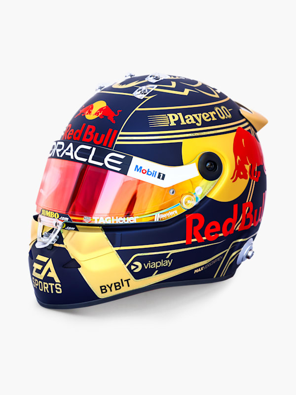

Nuestros Productos
1:2 Checo Perez Las Vegas GP 2023 Mini Helmet
- Detalles:
- Oracle Red Bull Racing Mini Helmet
- Piloto: Checo Perez
- Año: 2023
- Escala: 1:2
- Fabricante: The Merchandise Company
- Material: 40% ABS; 20% Foam; 20% EPS; 20% Polyester
1:2 Max Verstappen Retro 2023 Mini Helmet
- Detalles:
- Oracle Red Bull Racing Retro Mini Helmet
- Piloto: Max Verstappen
- Año: 2023
- Escala: 1:2
- Fabricante: The Merchandise Company
- Material: 40% ABS; 20% Foam; 20% EPS; 20% Polyester

1:2 Max Verstappen W/C 2023 Mini Helmet
- Detalles:
- Oracle Red Bull Racing Retro Mini Helmet
- Piloto: Max Verstappen
- Año: 2023
- Escala: 1:2
- Fabricante: The Merchandise Company
- Material: 40% ABS; 20% Foam; 20% EPS; 20% Polyester
1:43 Oracle Red Bull Racing RB19 Perez Bahrain GP 2023
- Detalles:
- Oracle Red Bull Racing RB19 model car
- Piloto: Checo Perez
- Año: 2023
- Escala: 1:43
- Fabricante: Spark
- Material: 64.33% Resin; 18.18% ABS; 7.69% PVC; 4.21% PE; 5.59% Paint
Camiseta Sim Racing Aero
- Detalles:
- Oracle Red Bull Sim Racing Aero Jersey
- Oracle Red Bull Sim Racing con logo en el pecho
- "Racing team" impreso en el pecho
- Diseño dinamico frontal y posterior
- cuello redondeado
- Material: 100% Polyester

Camiseta Sim Racing Team
- Detalles:
- Oracle Red Bull Sim Racing Team Jersey
- Patrocinadores y logo en la prenda
- Patron de diseño dinamico en frontal y posterior
- Manga corta
- Material: 100% Polyester
Replica Polo Juvenil
- Detalles:
- Replica polera polo para niños marca Castore
- Calce: Regular
- Logo estampado del equipo y patrocinadores
- Diseño ORBR en la espalda, conmemorativo de 20 años de historia
- Secado rapido y tela respirable
- Material: 91% Polyester, 9% Elastane
Replica de Polera Juvenil
- Detalles:
- Replica polera juvenil marca Castore
- Calce: Regular
- Logo estampado del equipo y patrocinadores
- Diseño ORBR en la espalda, conmemorativo de 20 años de historia
- Secado rapido y tela respirable
- Material: 91% Polyester, 9% Elastane